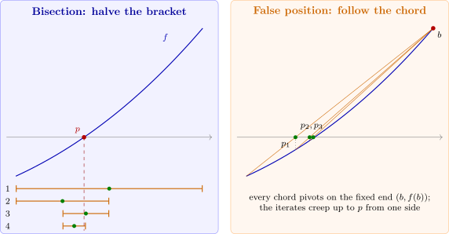

2.1 The bisection method
Suppose \(f\) is continuous on \([a,b]\) and \(f(a)\) and \(f(b)\) have opposite signs. Then \(f\) has a root in \((a,b)\). The bisection method halves the interval, keeps the half on which \(f\) still changes sign, and repeats.
Algorithm 2.1.1 (Bisection). To find a solution of \(f(x) = 0\), given \(f\) continuous on \([a,b]\) with \(f(a)f(b)<0\).
Input: end points \(a, b\); tolerance \(\varepsilon \); maximum number of iterations \(N\).
Output: an approximate solution \(p\), or a message of failure.
- Step 1:
- Set \(a_1 = a\), \(b_1 = b\), \(n = 1\).
- Step 2:
- While \(n\leq N\) do Steps 3–5.
- Step 3:
- Set \(p_n = a_n+\frac {b_n-a_n}{2}\), the midpoint.
- Step 4:
- If \(f(p_n) = 0\) or \(\frac {b_n-a_n}{2}<\varepsilon \), output \(p_n\) and stop.
- Step 5:
- If \(\sgn f(a_n)\cdot \sgn f(p_n)>0\), set \(a_{n+1} = p_n\), \(b_{n+1} = b_n\); otherwise set \(a_{n+1} = a_n\), \(b_{n+1} = p_n\). Increase \(n\) by \(1\).
- Step 6:
- Output “method failed after \(N\) iterations” and stop.
Note. Two details of the algorithm are deliberate. The midpoint is computed as \(a_n+\frac {b_n-a_n}{2}\) rather than \(\frac {a_n+b_n}{2}\): when \(a_n\) and \(b_n\) are close, rounding can make the second form fall outside \([a_n,b_n]\), while the first adds a small correction to a good approximation. And the sign test uses \(\sgn f(a_n)\cdot \sgn f(p_n)\) rather than the product \(f(a_n)f(p_n)\), which can underflow to \(0\) or overflow when the values are very small or very large.

Solution. The first thirteen iterations are:
| \(n\) | \(a_n\) | \(b_n\) | \(p_n\) | \(f(p_n)\) |
| \(1\) | \(1.0\) | \(2.0\) | \(1.5\) | \(2.375\) |
| \(2\) | \(1.0\) | \(1.5\) | \(1.25\) | \(-1.79688\) |
| \(3\) | \(1.25\) | \(1.5\) | \(1.375\) | \(0.16211\) |
| \(4\) | \(1.25\) | \(1.375\) | \(1.3125\) | \(-0.84839\) |
| \(5\) | \(1.3125\) | \(1.375\) | \(1.34375\) | \(-0.35098\) |
| \(6\) | \(1.34375\) | \(1.375\) | \(1.359375\) | \(-0.09641\) |
| \(7\) | \(1.359375\) | \(1.375\) | \(1.3671875\) | \(0.03236\) |
| \(8\) | \(1.359375\) | \(1.3671875\) | \(1.36328125\) | \(-0.03215\) |
| \(9\) | \(1.36328125\) | \(1.3671875\) | \(1.365234375\) | \(0.000072\) |
| \(10\) | \(1.36328125\) | \(1.365234375\) | \(1.364257813\) | \(-0.01605\) |
| \(11\) | \(1.364257813\) | \(1.365234375\) | \(1.364746094\) | \(-0.00799\) |
| \(12\) | \(1.364746094\) | \(1.365234375\) | \(1.364990234\) | \(-0.00396\) |
| \(13\) | \(1.364990234\) | \(1.365234375\) | \(1.365112305\) | \(-0.00194\) |
After \(13\) iterations the root lies in \([a_{14},b_{14}] = [1.365112305, 1.365234375]\), so \(p_{13}\) is within \(\frac {b_{13}-a_{13}}{2} = 1.2\times 10^{-4}\) of it. In fact \(|p-p_{13}| = 1.18\times 10^{-4}\). Notice that \(p_9\) is much better, with error \(4.4\times 10^{-6}\): bisection pays no attention to the size of \(f(p_n)\) and may discard a good approximation.
Theorem 2.1.3. Suppose \(f\in C[a,b]\) and \(f(a)f(b)<0\). Then the bisection method generates a sequence \(\{p_n\}\) converging to a zero \(p\) of \(f\), with \[|p_n-p|\leq \frac {b-a}{2^n},\qquad n\geq 1 .\]
Proof. By construction each interval \([a_n,b_n]\) has \(f(a_n)f(b_n)\leq 0\) and length \[b_n-a_n = \frac {b-a}{2^{n-1}} .\] The left end points \(a_n\) form an increasing sequence bounded above by \(b\), and the right end points \(b_n\) a decreasing sequence bounded below by \(a\); both converge, and since \(b_n-a_n\longrightarrow 0\) they have the same limit \(p\). By continuity \(f(p)^2 = \lim f(a_n)f(b_n)\leq 0\), so \(f(p) = 0\). Finally \(p\) and \(p_n = \frac {a_n+b_n}{2}\) both lie in \([a_n,b_n]\), and \(p_n\) is its midpoint, so \[|p_n-p|\leq \frac {b_n-a_n}{2} = \frac {b-a}{2^n}.\] □
The theorem says that \(p_n = p+O(2^{-n})\): each iteration gains one binary digit, so about \(3.3\) iterations are needed per decimal digit. It also tells us in advance how many iterations are needed.
Example 2.1.4. How many bisection iterations on \([1,2]\) guarantee an error less than \(10^{-3}\) for the root of (2.1)? How many are needed to find \(\sqrt 3\) to within \(10^{-4}\) by solving \(x^2-3 = 0\) on \([1,2]\)?
Solution. We need \(2^{-N}(2-1)<10^{-3}\), that is, \(N>\log _2 10^3 = 9.97\); so \(N = 10\) iterations suffice. This is a guarantee, not a prediction: the table above shows errors \(1.95\times 10^{-3}\), \(4.4\times 10^{-6}\) and \(9.7\times 10^{-4}\) at \(n = 8, 9, 10\), so the actual error does not decrease at every step, but it is below \(10^{-3}\) from \(n = 10\) on, as promised. For \(\sqrt 3\) we need \(N>\log _2 10^4 = 13.3\), so \(N = 14\). Indeed \(p_{14} = 1.73199463\), with error \(5.6\times 10^{-5}\).
Stopping criteria
In practice \(p\) is unknown, and one of the following tests is used to stop, with a tolerance \(\varepsilon >0\): \begin {align*} &\text {(i)} && |p_N-p_{N-1}|<\varepsilon ,\\ &\text {(ii)} && \frac {|p_N-p_{N-1}|}{|p_N|}<\varepsilon \quad (p_N\neq 0),\\ &\text {(iii)} && |f(p_N)|<\varepsilon . \end {align*}
None of them is foolproof, and it is worth knowing why.
Solution. For (i): the partial sums \(p_n = \sum _{k=1}^n\frac 1k\) satisfy \(|p_n-p_{n-1}| = \frac 1n\longrightarrow 0\), yet \(p_n\longrightarrow \infty \). Small steps do not mean that the sequence is close to its limit, or even that it has one.
For (iii): let \(f(x) = (x-1)^{10}\), whose only root is \(p = 1\). At \(x = 1.1\), \(f(x) = 10^{-10}\), so (iii) with \(\varepsilon = 10^{-9}\) accepts \(1.1\), which is wrong in the first decimal. When \(f\) is very flat near the root, \(|f|\) is small over a wide interval. The opposite can also happen: if \(f\) is very steep, \(|f(p_N)|\) can be large although \(p_N\) is very close to \(p\).
When nothing is known about \(f\), test (ii) is the best of the three, because it measures the step relative to the size of the answer. For bisection we can do better than all three: the bracket half-width \(\frac {b_n-a_n}{2}\), used in Step 4, is a guaranteed bound.
Example 2.1.6. Show that \(e^x = 3x\) has two roots, and locate the smaller one by six steps of bisection.
Solution. Let \(g(x) = e^x-3x\). Then \(g(0) = 1>0\), \(g(1) = e-3<0\) and \(g(2) = e^2-6>0\), so there is a root in each of \((0,1)\) and \((1,2)\). There are no others: \(g''(x) = e^x>0\), so \(g\) is convex and can cross zero at most twice. Bisection on \([0,1]\) gives \[p_1 = 0.5,\ p_2 = 0.75,\ p_3 = 0.625,\ p_4 = 0.5625,\ p_5 = 0.59375,\ p_6 = 0.609375,\] with signs of \(g(p_n)\): \(+,-,-,+,+,+\). So the root lies in \([0.609375, 0.625]\); it is \(0.6190613\), within the guaranteed \(2^{-6} = 0.016\) of \(p_6\). The other root is \(1.5121346\).
Note. Bisection always converges once a sign change has been found, which makes it the safest method in this section. Its weaknesses are that it is slow (linear in the sense of the bound, gaining one bit per step), that it uses only the signs of \(f\), and that it needs a sign change to start. A root at which \(f\) touches the axis without crossing, such as the root \(1\) of \((x-1)^2\), cannot be found by bisection at all. In practice bisection is often used to find a good starting point for the faster methods of the next subsections.
Questions on this section
Stuck on something here? Ask below and it stays attached to this topic.